Visual
Design |
UI | Chart |
||||
| New default colors for Chart | ||||
 |
||||
| Please, give us your voice until March 5, 2007. Thank you! | ||||
| #01 | 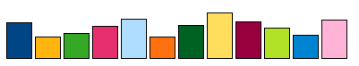 | |||
| Back to drafts: see #01 color proposal and their examples | ||||
| #02 | 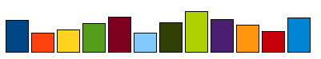 | |||
| Back to drafts: see #02 color proposal and their examples | ||||
| #03 | 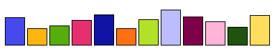 | |||
| Back to drafts: see #03 color proposal and their examples | ||||
| #04 | 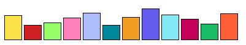 | |||
| Back to drafts: see #04 color proposal and their examples | ||||
| #05 | 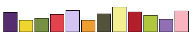 | |||
| Back to drafts: see #05 color proposal and their examples | ||||
| #06 | 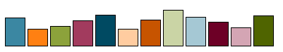 | |||
| Back to drafts: see #06 color proposal and their examples | ||||
| #07 | 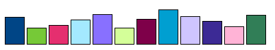 | |||
| Back to drafts: see #07 color proposal and their examples | ||||
| #08 | 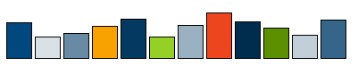 | |||
| Back to drafts: see #08 color proposal and their examples | ||||
| #09 | 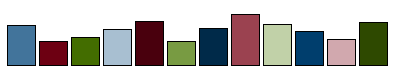 | |||
| Back to drafts: see #09 color proposal and their examples | ||||
| #10 | 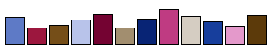 | |||
| Back to drafts: see #10 color proposal and their examples | ||||
| #11 | 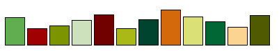 | |||
| Back to drafts: see #11 color proposal and their examples | ||||
| #12 | 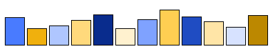 | |||
| Back to drafts: see #12 color proposal and their examples | ||||
| See the results of the voting (available March 2007) | ||||
Last
change:
03/06/2007
by sts